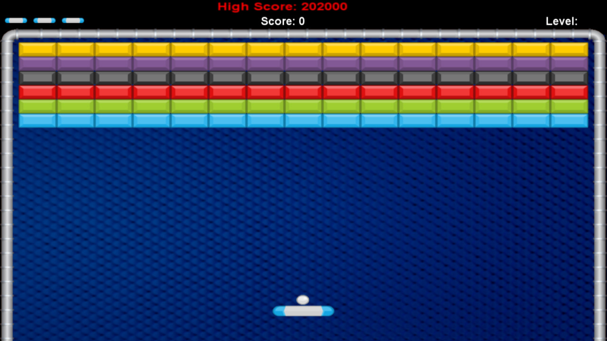

Breakout
Breakout zaczyna się z ośmioma wierszami cegieł, po dwa wiersze z każdego rodzaju. Kolejność kolorów od dołu to: żółty, zielony, pomarańczowy i czerwony. Używając jednej piłki, gracz musi zniszczyć jak najwięcej cegieł jak tylko zdoła. Piłka może odbijać się od ścian oraz od platformy w dole ekranu, którą to gracz może sterować. Jeżeli gracz nie trafi w piłkę, traci jedno życie. Gracz ma w sumie 3 życia by opróżnić dwa ekrany z cegłami. Żółte cegły dają graczowi jeden punkt, zielone trzy, pomarańczowe pięć, a czerwone, znajdujące się najwyżej dają siedem. Platforma zmniejsza się do połowy jej wielkości gdy gracz przebije się przez czerwony rząd i dotknie górną ścianę. Prędkość piłki zwiększa się w konkretnych interwałach: po czterech uderzeniach, po dwunastu uderzeniach oraz po dotknięciu pomarańczowego i czerwonego rzędu.
Najwyższy możliwy wynik to 896. Można to osiągnąć eliminując dwa ekrany z cegłami. Każdy z ekranów jest warty 448 punktów. Gdy drugi ekran z cegłami zostanie zniszczony, piłka odbija się w nieskończoność od pustych ścian dopóki gracz nie zrestartuje gry.
Graj